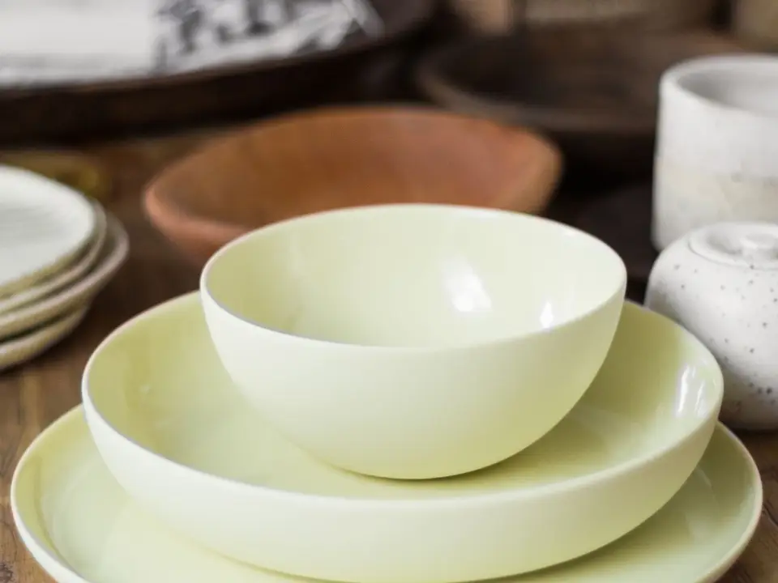
bol à déjeuner
BOL-62 · jaune de bléUn émail de cendre : il fonce légèrement d’une fournée à l’autre, et deux bols achetés à six mois d’écart ne seront pas du même jaune. ø 148 mm · h 72 mm · 620 ml.
Sur la tablette
BOL-G3bols gigognes ASS-26assiette de table TAS-38la tasse 38 BOL-62bol à déjeuner GOB-28gobelet sans anse CRU-12cruche et tassesGrès émaillé, tourné une pièce à la fois dans un atelier de l’Abitibi-Témiscamingue. De la vaisselle faite pour servir tous les jours.
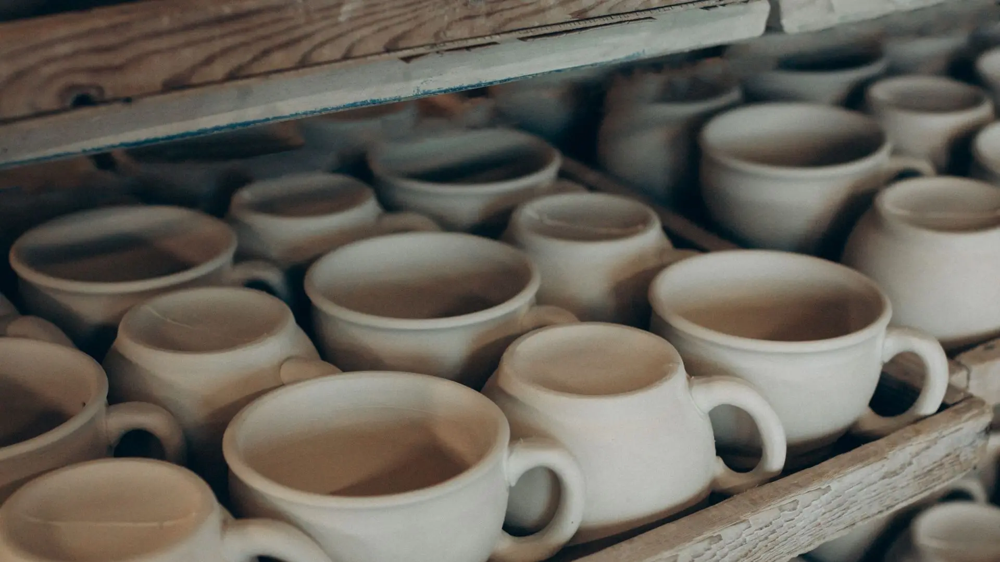
Le séchoir de l’atelier. Des tasses crues attendent leur pied, quatre jours avant le biscuit.
Une tasse se tourne un lundi. Elle raffermit trois jours, le temps qu’on puisse la retourner sans l’écraser. On lui tourne son pied, on lui soude son anse, elle sèche encore huit jours. Elle passe au biscuit, puis elle attend la prochaine fournée d’émail.
Sur ces vingt-six jours, le tour occupe quatre heures. Tout le reste est du séchage, du ponçage, du chargement de four — et de la casse. Ce qui casse ici ne se facture pas deux fois.
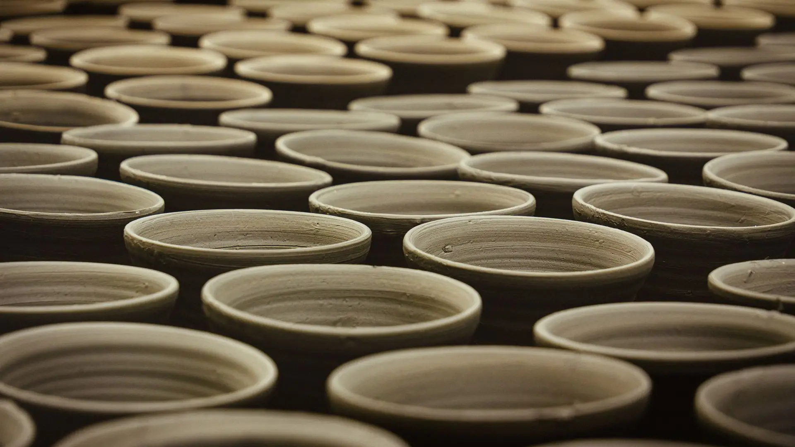
Une fournée en attente : des bols crus alignés sur les claies, avant l’enfournement.
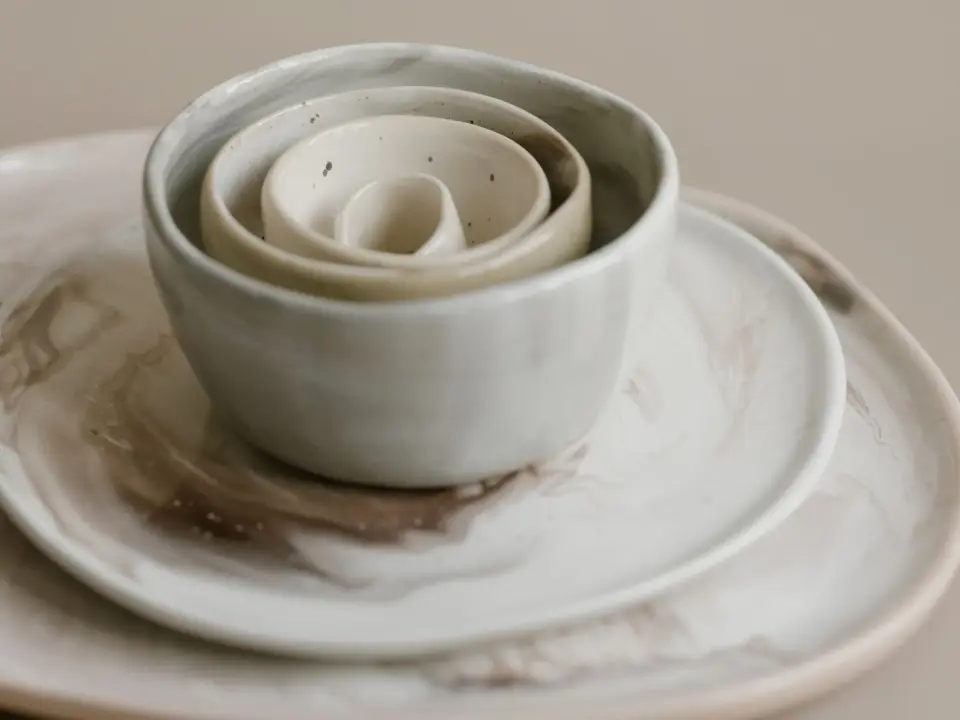
Deux bols qui s’emboîtent dans leur assiette et repartent dans l’armoire en une seule pile. Le marbré vient de deux terres tournées ensemble : le motif traverse la paroi, il n’est pas peint dessus. Aucun jeu n’est identique à un autre.
Chaque pièce est mesurée et pesée avant d’être mise en ligne. Les écarts d’une pièce à l’autre vont jusqu’à 3 mm : c’est tourné, pas moulé.

Un émail de cendre : il fonce légèrement d’une fournée à l’autre, et deux bols achetés à six mois d’écart ne seront pas du même jaune. ø 148 mm · h 72 mm · 620 ml.
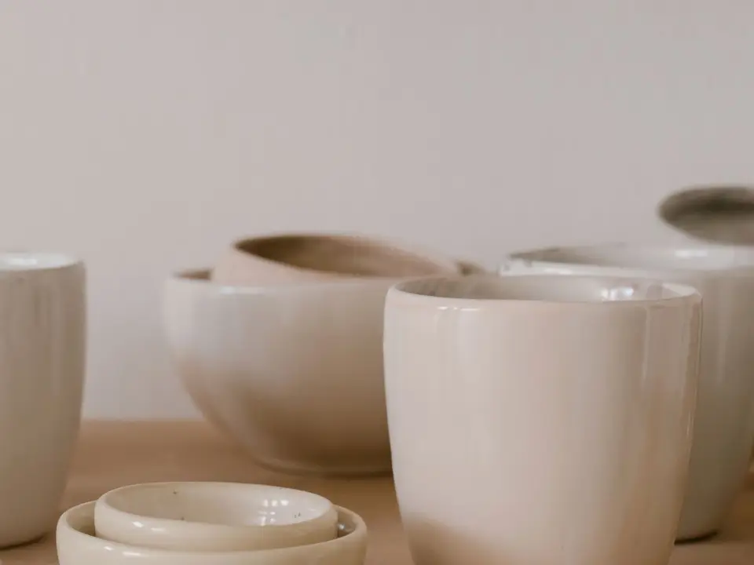
La forme la plus simple de l’atelier. Sans anse, il n’y a rien à décoller ni à casser ; la paroi est montée à 6 mm pour tenir la chaleur. ø 82 mm · h 96 mm · 280 ml.
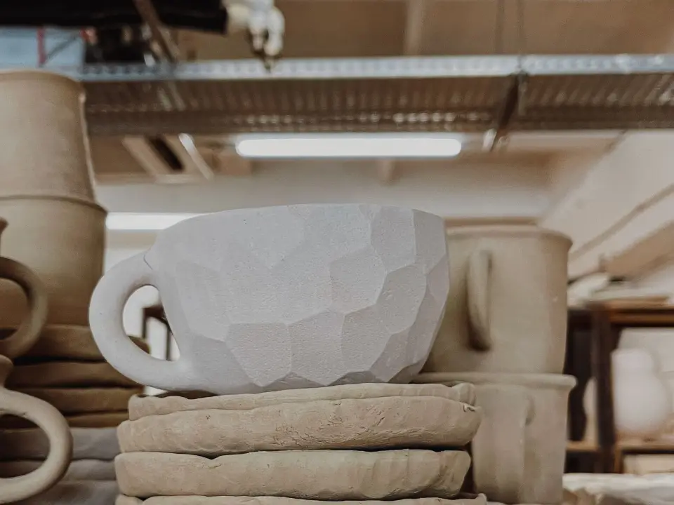
Douze facettes taillées à l’estèque quand la terre est encore molle. Photographiée crue, sur ses galettes : c’est le seul moment où la taille se voit sans l’émail dessus.
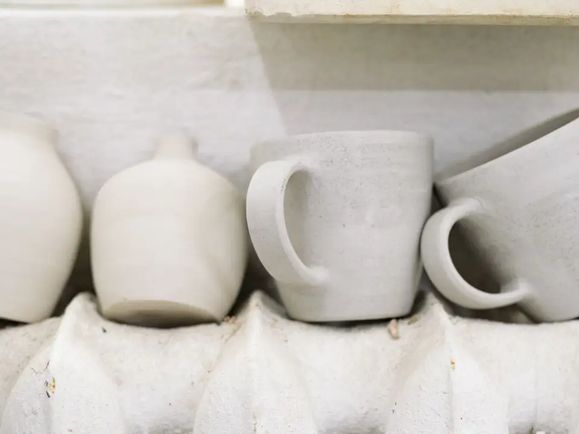
En séchage sur le radiateur, avec les tasses de la même fournée. Le bec est pincé à la main. Ces pièces-là partent en ligne le lendemain de l’ouverture du four.
On ne garde pas de stock : une fournée se remplit, elle ne se lance pas pour une tasse. Écrivez si vous cherchez une forme qui n’est pas là — on garde les moules.
Nous écrire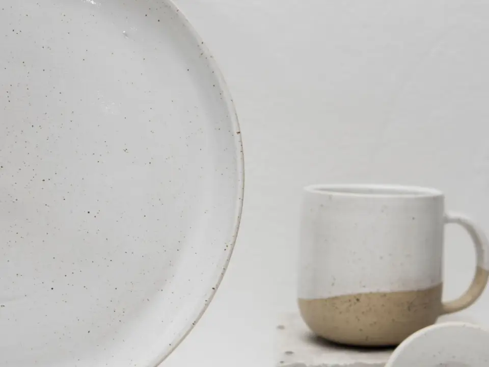
Les points sombres ne sont pas un décor : c’est le fer de la terre qui ressort à travers l’émail pendant la cuisson. Ils changent de place à chaque fournée. La tasse posée à côté est laissée en grès nu sous la ligne d’émail, pour qu’on voie de quoi elle est faite.
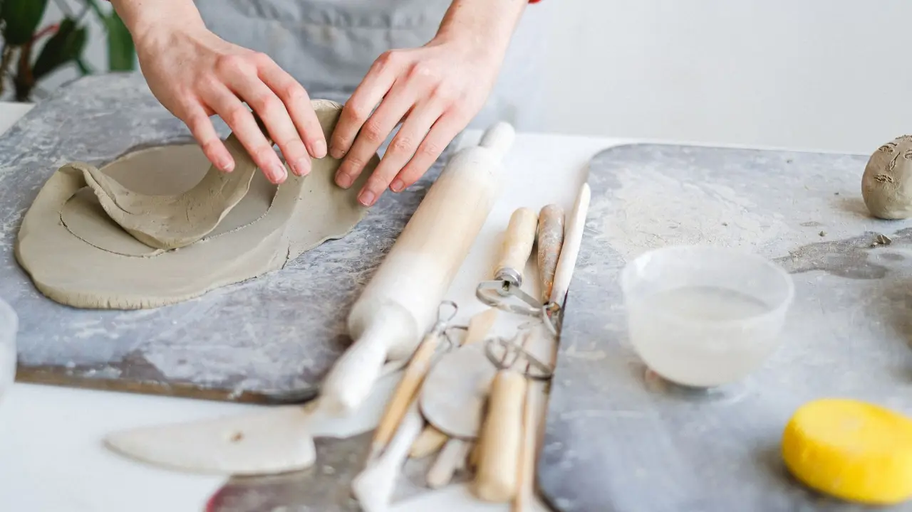
Elles sont étalées au rouleau à 9 mm, puis coupées au gabarit. Une assiette tournée serait plus épaisse au centre et se déformerait au four. La plaque donne une épaisseur constante : c’est ce qui permet d’en empiler douze sans qu’aucune ne berce.
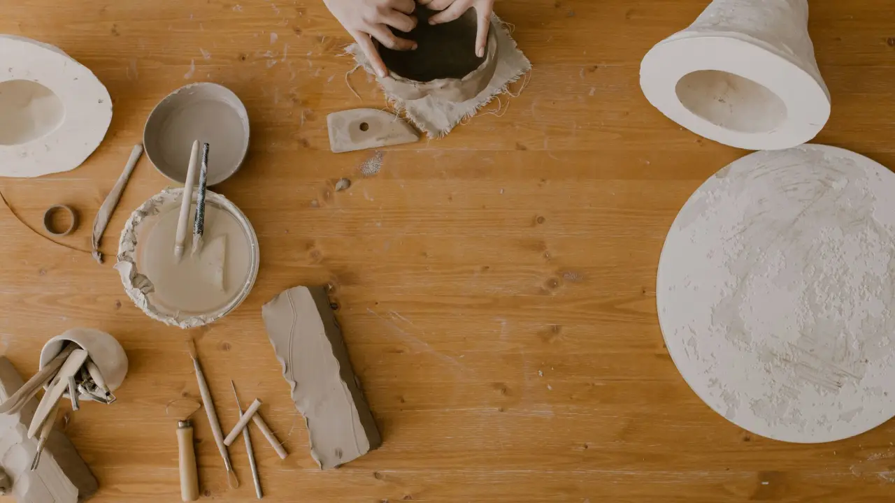
La plaque est posée sur un moule de plâtre, creux vers le bas. Le plâtre tire l’humidité par-dessous, la terre se raffermit en trente minutes et prend la courbe sans qu’on ait à la forcer. Un moule fait environ trois cents assiettes avant de refuser de boire.
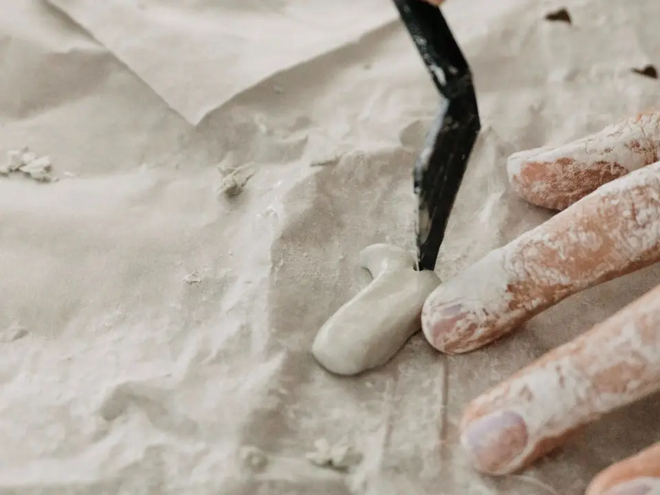
Une anse ne se colle pas : elle se soude. On griffe les deux surfaces, on met de la barbotine — de la terre délayée à l’eau — et on presse. Après cuisson, il n’y a plus de joint : c’est une seule pièce. C’est pour ça qu’une anse d’ici ne se décolle pas dans l’eau chaude.
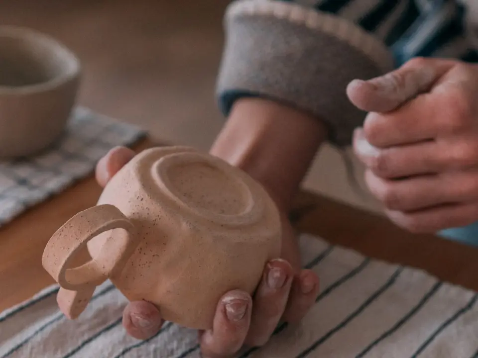
Le pied se tourne à l’envers, deux jours après la pièce. C’est le moment où les fêlures de séchage se voient, et c’est le moment où on jette. Chaque tasse est ensuite pesée : celle qui sort de 40 g de sa moyenne ne part pas dans la même commande qu’une autre.